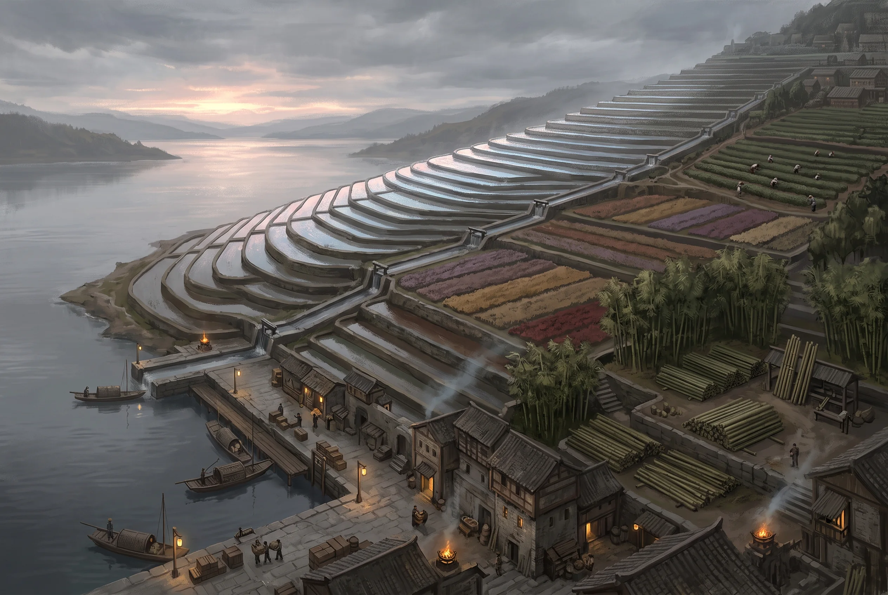

Typpe
City · Mososi · Settled · Tea, rice, bamboo, flowers; seat of the Direktor · pop. ~4,500 · off-oracle
Type: Capital · Condition: Grand · Disposition: Welcoming First look: Lush gardens · Projects: Farming · Touchstones: Courtesy and hospitality Region: Typpe · Location: Fields Location detail: Terraced above the water at the head of Falter Bay, east of the Seka
Exports: Tea above all, loose and pressed, in grades from bud-picked down to the sweepings. Rice off the wet terraces. Bamboo cut and stacked by grade, which is half the region’s scaffolding and all of its good baskets. And flowers, as scent, as dye, and as dried petal by the ton. A Freeport perfumer’s entire stock started in a Typpe field.
Imports: Everything that crosses the Sea of Bees, and all of it through somebody else’s port. Salt fish, whale oil, iron, cordage, glass, and Conclave seed at whatever Freeport decides it costs this year. Its own country reaches it by water too: grain and salt down the Bay from Lokigi on every tide, and march glass across from Intersang twice a week.
Typpe is the jewel of Mososi and knows it. It lies south-west across Falter Bay, on terraced ground where the hills come down to the water in a long descending stair of paddy and tea garden, and the approach by boat is deliberately theatrical: the terraces catch the morning light one row at a time, and the city is at the top of them where the water starts. The Direktor Roberto keeps his court here. Mososi is a benevolent dictatorship and Typpe is the argument for the benevolent.
The Stair
The terraces are the country’s actual constitution and everything political here follows from how they are watered.
Water enters at the top and goes down, and there is only one order in which it can do that. Every terrace on a run takes its turn, in sequence, for a duration, on a schedule set by the court and enforced by inspection, and a farmer at the eighth step is entirely at the mercy of what happens at the third. This has been true for as long as there have been terraces and it produces a society of unusual discipline and unusual quiet malice. Channels are immaculate. Gates are maintained to a standard that would embarrass a Freeport shipwright. Nobody steals water, because everybody downhill would know within the hour and the court would know by evening.
What can be done, entirely legally, is to be scheduled badly. A run of days moved two weeks late in a dry year is not theft and is not appealable and will cost a family its crop. Nobody in Typpe has ever needed to threaten anybody. The schedule does it.
Leaf
Tea is grown on the dry upper slopes above the paddy, and the city’s wealth is in what happens to it after it is picked.
Green leaf is withered, fired to stop it turning, rolled, and then (for the dark tea Typpe is known for) piled damp and warm and left to work for weeks under men who judge it by smell and by the heat of a hand pushed into the heap. That is where Typpe Fermented Brown comes from, and it is drunk in Freeport counting-houses by people who would not otherwise admit to liking anything Mososi makes.
Grade is everything and is decided by what went into the basket: bud-picked at the top, then a bud and a leaf, then two, then the coarse pluck, and at the bottom the sweepings off the drying tables, which are sold honestly as sweepings and dishonestly as everything else.
And the dark tea is pressed into cakes, which is where the money stops being agriculture. A cake keeps, travels, and improves: a good one is better at fifteen years than at five and is worth more accordingly. So the merchant houses of Typpe hold tea the way a Freeport house holds silver: stacked, insured, inventoried, borrowed against, and traded between parties who have no intention of ever drinking it. A bad season does not hurt a Typpe house. A rumour about a warehouse does.
The Inspectorate
The court’s officials are competent, numerous, and utterly unbribable in small matters, which tells you where the bribery actually happens.
Everything is inspected (leaf grade, water allocation, terrace maintenance, the condition of the bamboo cuts, the count of a flower field’s rows) and an inspector who took a coin to pass a bad grade would be finished within the week, because the man beneath him wants his post and the man above him is measured on catching exactly that. The system is genuinely clean at the point where a farmer meets it, and every farmer knows it, and this is the foundation of the court’s real popularity.
The corruption is one level up and it is not in the enforcement. It is in the rules. Who sets the grading standard for the season. Whose run moves in the schedule and whose does not. Which groves are declared due for cutting. Which perfumer’s contract is called a strategic export and which is merely a trade. None of that is enforcement and all of it is worth more than any bribe ever offered to a man with a measuring stick, and it is decided at court, by people who are paid nothing extra for deciding it, in rooms where the word bribe would be considered vulgar and the transaction would be considered obvious.
An honest inspectorate is not the opposite of a corrupt state. It is the machinery a corrupt state needs to make its decisions stick.
The Direktor
Roberto governs well. This is not court flattery and travellers who arrive expecting to sneer generally stop. The public works are excellent, the schedules are fair more often than not, the courts are quick, and a Mososi farmer is measurably better off than his opposite number under a Nyssian urbestro who answers to nobody between elections that do not happen.
What pays for it is the lake. Materton’s beds feed this country through any bad year it is likely to have, which means the Direktor has never once had to choose between feeding his people and keeping them. A ruler who cannot be starved into anything and cannot starve anybody either can afford to be reasonable, and Roberto has spent a reign being exactly that.
Two things sit underneath and neither is discussed at court. The first is what the beds cost the people who work them, which the court has known about for a century, needs the food, and does not raise. The second is that none of this is an institution. It is a man. There is no council that could outvote him and no law he could not revise, and while everyone knows the office goes to his eldest child, sex immaterial, nobody has written that down, because writing it down concedes that a directorship is a thing a person can inherit. This is a city that records the count of a flower field’s rows and holds nothing at all on the succession.
The eldest is a daughter. Her mother is Senjora Raina, who came off the Buralian grass twenty-two years ago and has not been improved by Typpe, and who keeps the twelve in an Optime capital because Optimes do not grade people and nobody has yet been willing to be the official who raises it. The girl has her mother’s hair. The court has had two decades to get used to that and a Freeport factor working out what it means would need about a minute.
The Thing About Freeport
Mososi has no sea access. Every rope, nail, salt fish and seed that crosses the Sea of Bees reaches Typpe by being landed at Freeport, opened, valued off a manifest and assessed, then charged again for the chit, the inspection and the chain, then put onto a barge. Freeport does not have to bargain about a line of that, because the alternative does not exist.
The court resents this in private and has organised its entire foreign policy around never admitting it in public. The tariff war at Termin is partly about Nysis and substantially about this: it lets Mososi be seen refusing something. And the Seka Lands and Sveba are tolerated in their eccentricities for related reasons: a court with one genuine dependency does not go looking for arguments it would have to win.
Features
- Terraces stepping down to the water, lit in sequence at dawn
- Channels and gates kept to a standard that would embarrass a shipwright
- Water arriving on a schedule, and everybody knowing whose turn it is
- Tea gardens on the dry upper slopes, pickers moving in lines
- Fermenting heaps, and a man judging one by the heat of his hand
- Pressed cakes stacked in a warehouse nobody intends to drink
- Managed bamboo groves, cut and stacked by grade
- Flower fields in blocks of flat colour
- Court officials inspecting something, always, and refusing coin
- Immaculate public works and immaculate public manners
- Boats up from Falter Bay unloading goods that came through Freeport
- A resentment of Freeport that nobody will state
Quest Starter
A season’s tea has been graded down by an inspector, ruining a grower who had already borrowed against it. The grower says the leaf was substituted after inspection. The inspector is unbribable and everyone knows it, which is exactly why his word cannot be challenged, and exactly why he would be worth the trouble of framing.